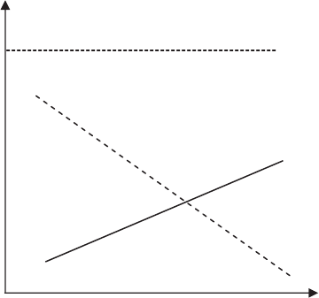
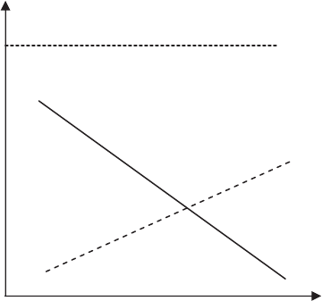

“I CARE ABOUT NATURE, BUT . . .”: DISENGAGING VALUES
IN ASSESSING OPPORTUNITIES THAT CAUSE HARM
DEAN A. SHEPHERD
Indiana University
HOLGER PATZELT
Technische Universität München
ROBERT A. BARON
Oklahoma State University
Some managers and entrepreneurs decide to act in ways that result in harm to the
natural environment, despite the fact that such actions violate their own values.
Building on moral self-regulation theory (Bandura, 1991), we propose that entrepre-
neurs’ assessments of the attractiveness of opportunities that harm the natural envi-
ronment depend on the simultaneous impact of values and personal agency. By
cognitively disengaging their pro-environmental values, decision makers (i.e., entre-
preneurs) can (under certain circumstances) perceive opportunities that harm the
environment as highly attractive and thus suitable for exploitation. The results of a
judgment task that generated 1,264 opportunity assessments nested within 83 business
founders offered support for this general prediction and indicated that the extent of
founders’ disengagement of their pro-environmental values was stronger when they
had high, rather than low, entrepreneurial self-efficacy, and stronger when industry
munificence was perceived as low rather than high. We discuss our new measure of
moral disengagement in a decision-making context and the implications of the
study’s findings for extant literatures on moral disengagement and sustainable
entrepreneurship.
Götz Werner, founder and owner of dm (Germa-
ny’s largest chain of pharmacies) has repeatedly
stated that society “cannot develop if we destroy
nature” and has further noted that dm customers
expect the company to sell only products consis-
tent with this credo. However, dm is known to sell
products containing palm oil produced in unsus-
tainable ways that can ultimately result in the de-
struction of rain forests. When confronted with this
fact, Mr. Werner commented, “If a producer makes
shower gel that customers want [to buy], we sell it.
It is the responsibility of the producers [to comply
with environmental standards]” (ARD, 2012). Situ-
ations such as this, in which individuals overtly
state strong moral values yet act in ways inconsis-
tent with them, pose a paradox: How can such
persons express strong support for certain values
but then openly violate them?
One intriguing—and compelling—explanation
for such events is provided by the theory of moral
disengagement, a framework derived from social
cognitive theory (Bandura, 1986, 2001). According
to this theory (Bandura, 1991), individuals adopt
beliefs about what is and is not desirable, use these
standards to judge the acceptability of alternative
courses of action, and typically regulate their own
behavior to be consistent with these standards.
Such self-regulation, then, is the source of moral
agency that causes people to generally “refrain
from behaving in ways that violate their moral stan-
dards” (Bandura, 1999: 193). Although these self-
regulatory processes are always present, they are
not always active. Thus, although moral values can
and often do shape decisions and actions, their
impact in this regard can be greatly reduced by the
process of moral disengagement. As defined by
Bandura, Barbaranelli, Caprara, and Pastorelli
(1996), this term refers to cognitive processes that,
when operating, disengage moral values from overt
actions.
The authors wish to thank AMJ’s Timothy Pollock and
three anonymous reviewers for their highly constructive
comments.
1251
Academy of Management Journal
2013, Vol. 56, No. 5, 1251–1273.
http://dx.doi.org/10.5465/amj.2011.0776
Copyright of the Academy of Management, all rights reserved. Contents may not be copied, emailed, posted to a listserv, or otherwise transmitted without the copyright holder’s express
written permission. Users may print, download, or email articles for individual use only.
Moral disengagement has been found to play a
role in a wide range of unethical actions and deci-
sions (e.g., Moore, Detert, Treviño, Baker, & Mayer,
2012), including lying, cheating, theft, self-serving
decision making by persons in authority, antisocial
workplace behavior (e.g., Shu, Gino, & Bazerman,
2011), harmful acts of aggression by children (Ban-
dura et al., 1996; Bandura, Underwood, & Fromson,
1975), and shirking civic duties (Caprara, Fida,
Vecchione, Tramontano, & Barbaranelli, 2009).
Also, additional research has helped identify indi-
vidual difference variables that are positively re-
lated to moral disengagement (i.e., “trait cynicism”
and “chance locus of control”) and others that are
negatively related to moral disengagement (i.e., em-
pathy and “moral identity”) (Detert, Treviño, &
Sweitzer, 2008; see also Moore et al., 2012). Despite
this growing body of evidence, however, much re-
mains to be learned about the nature and impact of
moral disengagement and the conditions under
which it is more or less likely to occur (Detert et
al., 2008).
In the present research, we seek to add to the
current knowledge of moral disengagement and its
potentially important effects in business contexts
by examining the conditions of its activation in a
specific, timely, and—we believe—highly relevant
context. In keeping with the example of Götz Wer-
ner in the opening paragraph, we address the fol-
lowing question: what conditions influence the
role of moral disengagement in decisions by found-
ing entrepreneurs holding pro-environmental val-
ues to actively pursue opportunities that will gen-
erate outcomes inconsistent with these values (i.e.,
opportunities for which development will cause
harm to the natural environment, namely, the
physical world, including the earth, biodiversity,
and ecosystems [Parris & Kates, 2003])? To investi-
gate this question, we draw on and seek to integrate
several bodies of theory and empirical findings:
moral self-regulation theory (Bandura et al., 1996),
research and theory relating to personal values and
agency, and research and theory concerning the
role of moral values in entrepreneurship (e.g., Bu-
car & Hisrich, 2001; Hannafey, 2003). We test our
model using hierarchical linear modeling with data
from a judgment task involving 1,264 assessments
nested in 83 business founders. By doing so, we
seek to make three primary contributions.
First, the growing literature on moral disengage-
ment (Bandura, 1991; Detert et al., 2008; Moore,
2008) has established that in order to engage in
actions inconsistent with their values, individuals
cognitively restructure the amount or the cause of
harm produced by such actions rather than change
the underlying values themselves. These cognitive
tactics include (1) cognitively restructuring specific
acts so they appear less harmful (and therefore less
inconsistent with moral values), (2) minimizing ac-
tors’ role or responsibility (e.g., shifting account-
ability to others, as in the Götz Werner example),
and (3) reducing identification with the victims of
harmful acts so that they, rather than the actors, are
blamed for the harm they experience (Bandura,
1986; Douglas, 1995). We extend this previous
work by theorizing and finding that under some
conditions, individuals are able to adjust the rela-
tionship between their values and the harm pro-
duced by various actions (rather than change the
underlying values or the amount of harm), so that
they perceive the opportunities producing such harm
as more attractive. By focusing on the personal
agency moderators of the relationship between values
and the weight assigned to harm, we seek to explicate
the specific circumstances conducive to greater or
lesser degrees of moral disengagement.
Second, scholars have long sought to identify the
foundations of immoral, dishonest, and illegal be-
havior (Moore et al., 2012). Although much prog-
ress toward this goal has been made (e.g., Finn &
Frone, 2004; Mishina, Dykes, Block, & Pollock,
2010; Murdock, Hale, & Weber, 2001; Staw & Sz-
wajkowski, 1975), past research has not yet inves-
tigated the role of values in such actions. However,
in the present research, we theorize that values
play a significant role in explaining the impact that
a specified harm resulting from action has on indi-
viduals’ assessments of the attractiveness of taking
such action. Moreover, we suggest that the nature of
this relationship depends on the level of both (task-
specific) entrepreneurial self-efficacy and perceived
resource scarcity. Thus, we seek a deeper under-
standing of the decision-making process that leads
to immoral or unethical actions through the contin-
gent consideration of values with both entrepre-
neurial self-efficacy and perceived resource scar-
city, rather than by focusing on these variables
independently.
Third, previous research has found that individ-
uals low in self-efficacy are more likely to morally
disengage and hence more likely to act unethically
than those high in self-efficacy (Farnese, Tramon-
tano, Fida, & Paciello, 2011; Finn & Frone, 2004;
Murdock et al., 2001). For example, individuals
with low learning self-efficacy are more threatened
and challenged by the demands of required tests
1252 OctoberAcademy of Management Journal
than those with higher self-efficacy (Locke, Freder-
ick, Lee, & Bobko, 1984). As a result, they are more
likely to morally disengage and cheat (Farnese et
al., 2011). We seek to expand on and clarify this
research by examining the role of personal agency
in a very different context—one involving an op-
portunity to engage in a voluntary task rather than
the kind of constrained situations investigated pre-
viously. We hypothesize and find that, in the
context of assessing different options (i.e., oppor-
tunities), individuals high in entrepreneurial self-
efficacy are likely to disengage their values more
than individuals low in entrepreneurial self-efficacy;
hence, they are also more likely to assess opportuni-
ties inconsistent with their values (i.e., ones that gen-
erate harm to the environment) as more attractive.
Finally, empirical studies have largely relied on self-
reported measures for the cognitive tactics of moral
disengagement (e.g., Bandura et al., 1996; Caprara et
al., 2009; Detert et al., 2008). By using a series of
conjoint experiments and a within-person design, we
are able to focus on the extent to which entrepre-
neurs disengage pro-environmental values in de-
cisions concerning opportunity exploitation—
capturing moral disengagement as it happens.
This new approach opens up additional research
opportunities for exploring the conditions that
trigger moral disengagement.
NATURE, VALUES, AND OPPORTUNITY
ASSESSMENTS
Harm to the natural environment refers to dimin-
ishing the intrinsic value of the physical world
(Muehlebach, 2001)—the earth, biodiversity, and
ecosystems (Parris & Kates, 2003)—and diminish-
ing a source of resources and services for the life
support of current populations and future genera-
tions (Daily, 1997). Researchers have proposed that
there are four primary drivers of business decisions
regarding sustaining the natural environment: val-
ues, economic opportunities, legislation, and stake-
holder pressures (Bansal & Roth, 2000). In this
article, we focus on values and economic opportu-
nities for several reasons. We focus on values be-
cause the personal values of top management team
members and other organizational decision makers
(Agle, Mitchell, & Sonnenfeld, 1999; Lawrence &
Morrell, 1995) have been shown to influence deci-
sions that impact the natural environment. Indeed,
values are at the heart of motivated choice (Judge &
Bretz, 1992). Specifically, we investigate business
founders’ pro-environmental values, because they
are closely aligned with the decision context we
studied—namely, opportunity exploitation and its
harm to the natural environment. We also focus on
economic outcomes because they are primary mo-
tivators of opportunity exploitation (Kuratko,
Hornsby, & Naffziger, 1997), and the economic con-
ditions of a firm’s industry are key factors in deci-
sion making (Covin & Slevin, 1989; Zahra & Covin,
1995). Thus, understanding individuals’ assess-
ments related to exploiting environmentally
harmful opportunities requires a concomitant
consideration of their values and the economic
context in which they make such assessments.
In this study, we build a values disengagement
model of making decisions that cause harm to the
natural environment. In the present entrepreneur-
ial context, we expect “disengagement” to be visi-
ble in the reduced impact of pro-environmental
values on the weight assigned to a specified harm
to the natural environment in individuals’ assess-
ments of the attractiveness of opportunities avail-
able for exploitation. The basic prediction is that,
as entrepreneurs’ pro-environmental values in-
crease in strength, the weight assigned to a speci-
fied harm to the natural environment will increase
(i.e., will receive greater emphasis) when they as-
sess the attractiveness of opportunities. However,
as moral disengagement operates, pro-environmen-
tal values will have a reduced impact on the weight
of such harm in entrepreneurs’ assessments of the
attractiveness of various opportunities (i.e., it will
receive decreased emphasis). In essence, our model
proposes that the impact of pro-environmental val-
ues strongly depends on the extent to which such
values are active or, alternatively, disengaged from
the assessment process. In addition, the model pro-
poses that two aspects of personal agency influence
the extent to which pro-environmental values are
disengaged: decision makers’ beliefs about their
competence for the task (i.e., entrepreneurial self-
efficacy) and about the munificence of the compet-
itive environment. In the sections that follow, we
develop each aspect of the model.
Pro-environmental Values and Assessments of
Entrepreneurial Opportunities
There are numerous explanations for why an
opportunity’s specified harm to the natural envi-
ronment could negatively influence entrepre-
neurs’ assessments of its attractiveness. For exam-
ple, entrepreneurs might anticipate damage to their
personal and/or their firms’ reputation from pursu-
2013 1253Shepherd, Patzelt, and Baron
ing opportunities that harm the environment (as
per findings on the relationship between illegal
actions and damage to a manager’s and an organi-
zation’s reputation (Karpoff, Lee, & Martin, 2008;
Karpoff & Lott, 1993; Wiesenfeld, Wurthmann, &
Hambrick, 2008)). However, there is likely to be
heterogeneity in entrepreneurs’ judgments of the
importance of anticipated losses, because personal
values guide such judgments. For example, Agle et
al. (1999) found that other-regarding values influ-
ence the importance that CEOs attach to employees
in their decisions impacting corporate perfor-
mance. Values are “an enduring belief that a spe-
cific mode of conduct or end-state of existence is
personally or socially preferable to an opposite or
converse mode of conduct or end-state of exis-
tence” (Rokeach, 1973: 5). As such, they represent
guiding principles (Schwartz & Bilsky, 1990) for
decision making and subsequent action (Fishbein &
Ajzen, 1972; Spash, 2002; Thøgersen & Ölander,
2002). Indeed, to a large extent, individuals acquire
moral values over time through socialization, much
of which occurs in childhood through interactions
with parents (Grusec, 2011). Because values are
acquired through a process extending over many
years (Grusec, 2011), we assume in our model that
they are relatively stable during assessments of en-
trepreneurial opportunities and do not change
readily with information about the nature of an
opportunity.
In this research, we focus on values related to the
natural environment—specifically, values that un-
derlie respect for the natural environment. Al-
though pro-environmental values are discussed in
general in the literature, they are rarely specified.
An exception is the United Nations’ “Millennium
Declaration” (United Nations General Assembly,
2000), which identified the precepts of sustainable
development as respect for nature, shared respon-
sibility, freedom, equality, solidarity, and tolerance
(see also Shepherd, Kuskova, & Patzelt, 2009). Fo-
cusing on the natural environment, respect for na-
ture refers to “prudence in the management of all
living species and natural resources” to ensure they
are “preserved and passed on to our descendants”
and a recognition that “current patterns of produc-
tion and consumption are unsustainable and must
be changed” (United Nations General Assembly,
2000). Perceiving an opportunity that harms the
natural environment as highly attractive is likely to
be inconsistent with these general principles. Thus,
when entrepreneurs are provided with information
about how an opportunity they are considering will
negatively influence the natural environment,
those with stronger pro-environmental values will
pay more attention to that information and will
weight it more heavily (i.e., assign it increased em-
phasis) in their opportunity assessments than en-
trepreneurs with weaker pro-environmental values.
Thus, we propose the following hypothesis:
Hypothesis 1. In assessing the attractiveness of
opportunities, the stronger entrepreneurs’ pro-
environmental values, the greater the weight
they assign to a specified harm to the natural
environment generated by these opportunities.
Factors Influencing the Disengagement of
Pro-environmental Values
Research findings indicate there are substantial
individual differences with respect to the propen-
sity to demonstrate moral disengagement (e.g.,
Moore et al., 2012). In a given situation, some in-
dividuals readily disengage their values, while oth-
ers are less likely to do so. From an agency perspec-
tive, Detert et al. (2008) theorized and found that
locus of control orientation is positively related to
moral disengagement. That is, individuals who be-
lieve they do not have control over life experiences
and events but believe life experiences and events
are controlled by luck and fate rather than personal
initiative (Detert et al., 2008; Levenson, 1981) are
more likely to disengage from their values. Such a
general belief about lack of control over life expe-
riences and events is, however, unlikely to exist in
a sample of business founders, who (with some
variation) largely believe they can influence the
outcomes they experience (e.g., Hmieleski &
Baron, 2009).
Believing in the ability to influence one’s life
course reflects personal agency. Social cognitive
theory (Bandura, 1989, 2001) proposes that among
the determinants of personal agency, “none is more
central or pervasive than people’s beliefs in their
capability to exercise some measure of control over
their own functioning and over environmental
events” (Bandura, 2001: 10) (see also Stajkovic and
Luthans [1998] for a meta-analysis on human func-
tioning). Individuals’ beliefs in the capability to
exercise control concern both successful task per-
formance and the individuals’ impact on subse-
quent events and outcomes. In the entrepreneurial
context, a central task for business founders is ex-
ploiting opportunities (Davidsson & Honig, 2003;
Gartner, 1990), and founders’ beliefs about capabil-
1254 OctoberAcademy of Management Journal
ity to successfully perform this task represent a key
aspect of entrepreneurial self-efficacy (Chen,
Greene, & Crick, 1998; Zhao, Seibert, & Hills, 2005).
Further, beliefs about whether successfully per-
forming a task will directly lead to positive out-
comes partly depend on perceptions of the abun-
dance of resources in an industry (Covin & Slevin,
1989; Tsai, MacMillan, & Low, 1991). Below, we
examine the effects of these two factors related
to personal agency—namely, entrepreneurial self-
efficacy and perceived industry munificence—on
the relationship between pro-environmental values
and the weight assigned to specified harm to the
natural environment resulting from opportunity
exploitation.
Entrepreneurial self-efficacy. One factor that
can potentially influence the extent to which val-
ues are disengaged is self-efficacy—individuals’ be-
lief that they can accomplish whatever they set out
to accomplish and therefore successfully achieve
self-set goals (Utsch, Rauch, Rothfuss, & Frese,
1999; Zhao et al., 2005). This belief, as it relates to
our study—specifically, that one can successfully
create and manage one’s own business (i.e., entre-
preneurial self-efficacy [Chen et al., 1998])—may
encourage greater disengagement of pro-environ-
mental values in several ways.
Self-regulation is based on the premise that people
do things that “give them satisfaction and a sense of
self-worth, and they refrain from behaving in ways
that violate their moral standards because such con-
duct will bring self-condemnation” (White, Bandura,
& Bero, 2009: 42). Individuals’ feelings of satisfac-
tion and sense of self-worth are enhanced when
they engage in tasks they feel competent to accom-
plish, and actually accomplishing such tasks fur-
ther enhances their perceived competence (Ryan &
Deci, 2000, 2001). As a result, “self-efficacy beliefs
function as an important set of proximal determi-
nants of human self-regulation” (Bandura, 1991:
257). Specifically, entrepreneurial self-efficacy re-
fers to the strength of a person’s belief that he or she
is capable of performing the tasks required to create
and successfully manage his or her own business
(Chen et al., 1998). Entrepreneurial self-efficacy has
been found to be positively related to the intention
to act entrepreneurially (Zhao et al., 2005; Zhao,
Seibert, & Lumpkin, 2010) and to entrepreneurial
action (Boyd & Vozikis, 1994).
Although one key entrepreneurial task (i.e., in-
novation) involves generating new ideas, products,
processes, and markets, the other tasks represent-
ing the subdimensions of entrepreneurial self-effi-
cacy are focused on effective opportunity exploita-
tion (Chen et al., 1998). More generally, people are
drawn to activities in which they are competent
(Bandura & Schunk, 1981; Ryan & Deci, 2000), and
individuals high in self-efficacy are often drawn to
challenging tasks that test and build their capabil-
ities (Csikszentmihalyi, 1979) as well as experi-
ences that provide personal satisfaction (Srivas-
tava, Locke, Judge, & Adams, 2010). After all, they
believe—often fervently—that they can success-
fully meet these challenges. Therefore, when con-
fronted with opportunities that harm the natural
environment, individuals high in entrepreneurial
self-efficacy are often drawn to using their capabil-
ities to actively exploit them. However, as noted
above, moral values may operate to restrain such
actions. Consequently, in such contexts, individu-
als face a conflict regarding actions that will pro-
mote satisfaction and self-worth but will simulta-
neously violate their moral standards and generate
self-censure. As Bandura noted, “selective moral
disengagement is most likely to occur under moral
predicaments in which detrimental conduct brings
valued outcomes” (2006: 171).
In contrast, for those low in entrepreneurial self-
efficacy, there is relatively little conflict between
satisfaction and sense of self-worth, on the one
hand, and moral standards, on the other, when
assessing the attractiveness of opportunities that
harm the natural environment. Individuals low in
entrepreneurial self-efficacy harbor doubts that the
benefits of such opportunities will be realized, be-
cause they are uncertain that they will successfully
exploit them. More generally, individuals low in
self-efficacy are easily dissuaded by obstacles (Gist,
1987), which may include their own pro-environ-
mental values, in this case. Similarly, such individ-
uals are likely to believe they have little control
over an entrepreneurial situation or entrepreneur-
ial outcomes (Markman, Balkin, & Baron, 2002). We
reason that dissuasion from opportunities is likely
to occur among entrepreneurs low in entrepreneur-
ial self-efficacy, especially when decisions to pur-
sue such opportunities do not align with their pro-
environmental values.
In consideration of this reasoning, and recogniz-
ing that the extent to which pro-environmental val-
ues are disengaged is reflected in the reduced im-
pact of these values on the weight assigned to a
specified harm to the natural environment in op-
portunity assessments, we offer the following
hypothesis:
2013 1255Shepherd, Patzelt, and Baron
Hypothesis 2. When assessing the attractive-
ness of various opportunities, the impact of
pro-environmental values on the weight as-
signed to a specified harm to the natural envi-
ronment is reduced to a greater degree when
entrepreneurial self-efficacy is high than when
it is low.
Perceived industry munificence. Agency is ex-
ercised through self-efficacy and within “system
conditions,” which concern “the changeability or
controllability of the environment...[and repre-
sent] the opportunity structures to exercise per-
sonal efficacy and the ease of access to those op-
portunity structures” (Bandura, 1991: 269). For
entrepreneurs, one substantial system condition is
industry, specifically industry munificence—the
“scarcity or abundance of critical resources needed
by (one or more) firms operating within an environ-
ment” (Castrogiovanni, 1991: 542; cf. Dess &
Beard, 1984).
Some industries offer many resources and repre-
sent a decision context in which there is minimal
difference in outcomes between poor and good
judgments. That is, a high degree of industry mu-
nificence compensates for entrepreneurial and stra-
tegic weaknesses (Tsai et al., 1991). With greater
environmental capacity, munificent environments
are characterized as supporting growth and stabil-
ity and enabling firms to build buffers against fu-
ture hardship (Dess & Beard, 1984). These resource-
rich (i.e., munificent) industries have been
described as providing a tide that raises all boats
(Wasserman, Anand, & Nohria, 2010). In contrast,
less munificent environments (i.e., less environ-
mental capacity) (Dess & Beard, 1984) are charac-
terized by intense competition (Aldrich, 1979), lack
of exploitable opportunities (Covin & Slevin, 1989),
and hostility (Khandwalla, 1976/1977; Miller & Fri-
esen, 1983). As a result, less abundant industries
are more “selective,” in that decision makers’ judg-
ments have a greater impact on performance out-
comes than in more munificent environments (Co-
vin & Slevin, 1989; Tushman, 1977; Zahra & Covin,
1995). Therefore, personal agency beliefs are likely
to be higher in environments perceived as less mu-
nificent (than in those perceived as more munifi-
cent) because individuals believe their assessments
and decisions will have a greater impact on the
outcomes experienced (including forestalling un-
desirable performance outcomes).
Perceived industry munificence may directly in-
fluence the extent to which pro-environmental val-
ues are disengaged. Firms have many ways to grow
and profit for firms in munificent industries (Brit-
tain & Freeman, 1980; Tushman & Anderson, 1986).
Therefore, pursuing opportunities that harm the
natural environment may be only one of the many
ways to enhance firm performance. Indeed, oppor-
tunity exploitation itself may be viewed as involv-
ing an unnecessarily risky means of enhancing firm
performance (Covin & Slevin, 1989). Therefore,
there is little conflict between the cost of forgoing
an opportunity and the values guiding the decision
to forgo. Under such perceived conditions, pro-
environmental values remain more fully engaged,
and it is less likely that entrepreneurs will be
drawn to opportunities that harm the natural
environment.
In contrast, less munificent industries are char-
acterized in part by a “paucity of readily exploit-
able market opportunities” (Zahra & Covin, 1995:
48) and a lack of maneuverability. Under these
conditions, there are fewer ways to enhance growth
and profitability. Thus, opportunities that can po-
tentially harm the natural environment are part of a
much smaller set of opportunities that can poten-
tially be developed. Indeed, empirical research has
found that corporate entrepreneurship is more im-
portant for firm performance in resource-scarce in-
dustries than in more munificent industries (Covin
& Slevin, 1989; Miller & Friesen, 1983; Zahra &
Covin, 1995). Therefore, in an industry context per-
ceived as less munificent, the importance of pursu-
ing a focal opportunity conflicts with pro-environ-
mental values to a greater extent. In turn, greater
conflict between values and beliefs about influenc-
ing outcomes increases the likelihood that decision
makers will disengage their values to a greater ex-
tent when assessing opportunities. For instance,
such decision makers may tell themselves that after
exploiting a particular opportunity and/or when
the industry turns around, they will be in a better
position to exploit only environmentally friendly
opportunities in the future. In accordance with this
reasoning, we offer the following hypothesis:
Hypothesis 3. When assessing the attractive-
ness of various opportunities, the impact of
pro-environmental values on the weight as-
signed to a specified harm to the natural envi-
ronment is reduced to a greater degree when
perceived industry munificence is low than
when it is high.
1256 OctoberAcademy of Management Journal
DATA AND METHOD
Research Design
Given the sensitive nature of the topic of moral
disengagement, empirical research is often difficult
to conduct. Previous research has provided insight
into the many cognitive strategies used to “justify”
such behaviors, but unsurprisingly, it has been dif-
ficult to disentangle several possible explanations
and establish direct causal links. Laboratory exper-
iments have provided causal explanations for
moral violations with simple tasks, yet (through
necessity) such studies do not capture the richness
of the context in which complex judgments and
decisions concerning opportunity exploitation are
made. To examine changes in decision makers’ as-
sessments of opportunities based on specified harm
to the natural environment from opportunity ex-
ploitation, we used a set of metric conjoint experi-
ments, a within-person manipulations design, a
postexperimental questionnaire, and second-
ary data.
We chose conjoint analysis because it has been
used in hundreds of judgment and decision-making
studies throughout a variety of disciplines (Green,
Krieger, & Wind, 2001), including marketing (see
Carroll & Green, 1995), strategy (e.g., Pablo, 1994;
Tyler & Steensma, 1995), entrepreneurship (for a re-
view, see Lohrke, Holloway, and Woolley [2010]),
and economic psychology (e.g., Poortinga, Steg,
Vlek, & Wiersma, 2003). Specifically, conjoint anal-
yses similar to the one we used here have been used
to investigate complex decisions and evaluations,
such as venture capitalists’ evaluations of potential
portfolio companies’ probability of survival (Shep-
herd, 1999), alliance managers’ decisions about al-
locating further resources to underperforming alli-
ances (Patzelt & Shepherd, 2008), entrepreneurs’
decisions to persist with poorly performing firms
(DeTienne, Shepherd, & DeCastro, 2008), and en-
trepreneurs’ assessments of the likelihood that they
would exploit specific opportunities (Choi & Shep-
herd, 2004; see also Mitchell, Shepherd, & Sharf-
man, 2011).
Conjoint experiments require participants to as-
sess a series of profiles and make a judgment about
each profile. A profile is a combination of theoret-
ically justified attributes of a decision task in which
each attribute is represented by a level. Attributes
are typically represented by one of two levels (high
or low). An experimental design is used to deter-
mine which attribute level is used for a specific
profile and how many profiles are needed to test
the hypotheses (typically, more profiles are re-
quired for a greater number of attributes and for a
greater number of two-way interactions between
attributes to be tested). For metric conjoint analy-
sis, the experimental design is typically orthogonal
(i.e., there is zero correlation between attributes, so
all combinations of levels across attributes are pos-
sible) and fractional (i.e., not all possible attribute-
level combinations are presented to respondents).
This technique generates real-time data (i.e., data
are generated and collected as judgments are
made). From the series of judgments made by an
individual, analysis can decompose the “captured”
judgments into their underlying structure (i.e.,
which attributes are significantly used in forming
the judgments). Furthermore, analysis of a sample
of participants must acknowledge and account for
the nested nature of the data—namely, decisions
nested in individuals. Random coefficient model-
ing (most commonly referred to as hierarchical lin-
ear modeling [HLM]) is well suited for dealing with
nested data. The current study involves data at
three levels: assessments nested in manipulated
contexts nested in individuals. With HLM analysis
(in this case, HLM 3), we captured the decision
policy of the sample as a whole (from the decision
at level 1), how that decision policy varies across
manipulated contexts (level 2), and how the manip-
ulated context’s impact on the decision policy is
influenced by higher-level variables (level 3).
In this case, the participants made judgments
regarding the attractiveness of an opportunity for
their current businesses according to attributes
about the exploited opportunity’s potential to con-
tribute to a firm’s competitive advantage. To pro-
vide a common context, participants were asked to
make several assumptions before making their as-
sessments, including “all opportunities presented
can be pursued in the current economic situation in
your country”; “the opportunities presented are in-
dependent of each other”; “your market position
can be defended well against competition”; “the
timeframe of exploiting the opportunity is pro-
jected to be two years”; “there are no substantial
barriers to financing exploitation”; “exploitation
can either take place within your existing firm or in
a new firm”; and “other than the information pro-
vided in the hypothetical profiles, the opportuni-
ties presented operate in a similar industry as your
current business and are otherwise similar to other
opportunities you have seen in all respects.” We
used an online research instrument to administer
the experiments and survey. On average, it took the
2013 1257Shepherd, Patzelt, and Baron
participants 28 minutes to complete both the ex-
perimental task (25 opportunity profiles; for details
see below) and the postexperimental questionnaire.
The profiles consisted of three attributes about
the potential of the opportunity, if exploited, to
contribute to a firm’s competitive advantage (dis-
cussed in greater detail in the next section, level 1
variables). Each attribute varied on two levels; con-
sequently, there were eight (2
3
) possible profile
combinations. With replication and the use of three
sets of conjoint experiments for each participant,
the total number of profiles could have become
unwieldy for participants. To make the assessment
task more manageable, we used Hahn and Shapi-
ro’s (1966) orthogonal fractional factorial design to
reduce the number of different attribute level com-
binations to four. In choosing an orthogonal frac-
tional factorial design, we followed the general rule
of confounding the effects of greatest interest with
effects that are unlikely to be significant or cause
much bias in the estimated parameters (Green &
Srinivasan, 1990). A practice profile was provided
to familiarize the participants with the conjoint
procedure. This design allowed us to control for all
the main effects in calculating the overall attrac-
tiveness of opportunities before and after the
manipulation.
For the experimental manipulation (level 2 vari-
able), respondents were asked to make a set of
opportunity exploitation judgments in the context
of a neutral impact on the natural environment
(nine decisions: one practice, four original profiles,
and four replicated profiles) and then in the context
of a specified high negative impact on the natural
environment (eight profiles: 4 original profiles and
4 replicated profiles). For the neutral context, par-
ticipants were told that “the exploitation of the
opportunity does not have any (negative or posi-
tive) impact on the natural environment in the local
setting or other parts of the world.” For the negative
context, participants were told that the “opportu-
nity you are considering will cause a significant
decline in the natural environment in the location
where you live and in other parts of the world”
(details of the information provided are stated
below).
To test for order effects, we created eight unique
versions of the experiment that differed in order of
attributes (two versions), order of profiles (two ver-
sions), and order of environmental impact informa-
tion (two versions). Although this approach is com-
mon in terms of the order of attributes and order of
profiles, the order of environmental impact infor-
mation requires further comment. There is the pos-
sibility that by presenting the conjoint profiles for
the neutral context first and then for the negative
context, differences could be attributed to the order
of the conjoint experiments rather than the manip-
ulation. To reduce this possibility, we introduced a
positive environmental impact condition (with 8
profiles: 4 original profiles and 4 replicated pro-
files) for which participants were told that “the
exploitation of the opportunity can cause a signif-
icant improvement of the natural environment lo-
cally and in other parts of the world.” Half of the
participants received neutral, positive, and then
negative conditions, and the other half received
neutral, negative, and then positive conditions.
Participants were randomly assigned to one of the
eight experimental forms. Because there were three
“environmental impact” conditions, participants
were asked to respond to a total of 25 profiles—9
profiles for the neutral condition (including the one
practice profile, which was not used in the analy-
sis), 8 profiles for the negative condition, and 8
profiles for the positive condition (which served
to test for order effects). We used HLM to test for
order effects for each of the order of attributes,
the order of profiles, and the order of environ-
mental information (each were entered as level 3
variables). The results indicated no significant
order effects (p Ͼ .05).
Sample
The sampling frame included independent
founders involved in new ventures located in busi-
ness incubators in Germany. This population of
founders is particularly appropriate for our pur-
pose because incubators are specifically designed
for individuals who have recently begun to exploit
new business opportunities (Rice, 2002). From a
list of incubators issued by the German Federal
Association of Innovation, Technology and Start-Up
Centers and other public sources, we identified 26
incubators in three states in spatial proximity to the
second author’s location. From the incubators’
websites, we captured a list of all incubator ven-
tures and their owner-managers. Subsidiaries of
large firms were excluded from the list because
their strategies could have been influenced by the
strategic directions of their parent organizations.
We also excluded firms that were no longer run by
the initial business founder. Our final list con-
tained 534 ventures run by 597 founders (some
ventures were run by two or three individuals).
1258 OctoberAcademy of Management Journal
The founders were then contacted via phone over
a four-month period. We explained the purpose of
the study and asked if they would be willing to
participate. Participation was voluntary, and those
who participated received a small gift (a cup with
the logo of the second author’s institution) after
completing the task. We were able to contact 350
founders (all from different ventures). Further in-
vestigation revealed that 43 of the ventures with
which we had failed to make contact had ceased
operations. If a founder agreed to participate, we
sent him or her an e-mail invitation summarizing
the purpose of our study and providing a link to our
online research instrument. Founders who agreed
to participate but had not done so within two weeks
of invitation were sent an e-mail reminding them of
the importance of their participation and providing
them with the link to the online instrument. We fi-
nally received responses from 93 founders, represent-
ing a 26.6 percent response rate in terms of individ-
uals invited. Following recommendations for testing
nonresponse bias (Dooley & Lindner, 2003), we used
analysis of variable (ANOVA) to test for differences
between early and late respondents on each of the
hypothesized parameters—pro-environmental val-
ues, entrepreneurial self-efficacy, and perceived in-
dustry munificence. None of these tests revealed a
significant difference (p Ͼ .10).
The founders’ average age was 42.4 years (s.d. ϭ
11.1), and 83.1 percent of the sample consisted of
men. Further, 75.3 percent held a master’s degree
or higher, 41.6 percent had a background in engi-
neering/technology; 30.3 percent, in business ad-
ministration; 22.4 percent, in natural sciences and
mathematics; and the rest had various other back-
grounds (e.g., humanities). On average, participants
had worked for 12.3 years in the private sector
(s.d. ϭ 8.3) and had founded 1.75 businesses (s.d. ϭ
1.16). The average firm in our sample was 7.4 years
old (s.d. ϭ 5.9) and had 9.5 employees (s.d. ϭ 32.1).
In all, 75.3 percent of the firms were technology-
based ventures (e.g., biotechnology, information
technology, optical devices), and the others be-
longed to various low-technology industries (e.g.,
marketing and trade).
Variables and Measures
Level 1: Opportunity assessment. A founder’s
assessment policy was decomposed into a coeffi-
cient for each of the assessment attributes and an
intercept. The intercept indicates the participant’s
assessment of the attractiveness to exploit an oppor-
tunity over and above the influence of the opportu-
nity’s strategic attributes—value, rarity, and non-
imitability/nonsubstitutability. Following Haynie,
Shepherd, and McMullen (2009), we characterized
each strategic attribute of the opportunity as either
high or low:
(1) When value is high, an opportunity exhibits
the potential for considerable increases in effi-
ciency and effectiveness; when value is low,itex-
hibits the potential for minimal increases in effi-
ciency and effectiveness.
(2) When rarity is high, information about an
opportunity is not widely available to others; when
rarity is low, information about the opportunity is
widely available to others.
(3) When inimitability/nonsubstitutability is high,
others have minimal possibilities to imitate (or de-
velop substitutes for) an opportunity; when inimita-
bility/nonsubstitutability is low, others have consid-
erable possibilities to imitate (or develop substitutes
for) the opportunity.
Participants read the following instruction: “In-
dicate (using the scale provided) your assessment
of the opportunity in terms of the opportunity’s
potential, if exploited, to confer upon your firm a
sustainable competitive advantage in the market-
place.” For each of the scenarios in each context,
this assessment outcome was measured on a Likert
scale (1 ϭ “not at all attractive,” 11 ϭ “very attrac-
tive”). We want to emphasize that the participants
chose how likely they were to pursue the entrepre-
neurial opportunity, not to assess a specific mode
of exploitation. In constructing the conjoint profile,
we used full profiles and a rating scale (for a full
description, see Green and Srinivasan [1990] and
Louviere [1988]) that is consistent with Shepherd
(1999), but we used three, rather than eight, attri-
butes per profile.
Level 2: Specified harm to natural environ-
ment. The following was presented to the entrepre-
neurs to indicate specified harm to the natural
environment:
Please assume that yesterday a scientific journal
published a study showing that pursuing the oppor-
tunity you are considering will cause a significant
decline in the natural environment in the location
where you live and in other parts of the world.
Specifically, the published study reported the
following:
● Chemical experiments showed that one of the
waste products of the production process underly-
ing the opportunity can act as a greenhouse gas.In
2013 1259Shepherd, Patzelt, and Baron
the laboratory, the greenhouse gas effect was 250
times stronger than for carbon dioxide, which is a
known greenhouse gas.
● Calculations of the scientists showed that the
amount of emissions of the production site on
which you base your business model can have a
measurable impact on the greenhouse effect. Ac-
cording to the predictions, temperatures are likely to
rise by 5% per year in areas where the waste prod-
uct is emitted.
● The published figures also suggest that from the
predicted production and sales volumes in the busi-
ness plan over the next five years, the cumulated
emissions can measurably contribute to global
warming. The impact is likely to be about 10% of the
impact of globally emitted carbon dioxide (which is
responsible for about 60% of human-made climate
change).
Level 3: Pro-environmental values. The sustain-
able development values scale (Shepherd et al.,
2009) includes a subscale for “respect for nature”
(four items). On a seven-point Likert-type scale,
participants were asked to choose between two al-
ternative statements: “Sometimes, some natural re-
sources need to be sacrificed for important devel-
opments” and “All precautions must be taken to
protect natural resources in our development ef-
forts”; “Current patterns of production only require
minor adjustments to protect the welfare of the
natural environment” and “Current patterns of pro-
duction must be substantially changed to protect
the welfare of the natural environment”; “People
only need to make minor changes to their current
consumption out of respect for nature” and “People
must make major changes to their current con-
sumption out of respect for nature”; and “To a
certain extent, the natural environment will look
after itself to the benefit of future generations” and
“It is the obligation of a society to vigorously pro-
tect the natural environment for the benefit of fu-
ture generations.” The internal reliability of the
scale used to test the hypotheses had a Cronbach’s
alpha of .79.
We chose the respect for nature subscale (Shep-
herd et al., 2009) for several reasons. First, it was
derived from the fundamental values the United
Nations identified as crucial for sustainable devel-
opment in its Millennium Declaration. Therefore,
the scale provides the opportunity to capture a
construct whose definition is widely known and
accepted. Second, the scale items are not depen-
dent on any specific context or sample properties
and are thus applicable for our purpose without
needing to be modified. Finally, the scale was de-
veloped by a rigorous process, including validation
on two independent samples, and it shows solid
psychometric properties.
Level 3: Entrepreneurial self-efficacy. The en-
trepreneurial self-efficacy scale (Chen et al., 1998)
includes 22 items. This scale describes tasks and
roles that are typical in the entrepreneurial context.
Respondents rated their belief in their ability to
accomplish a task (1 ϭ “completely unsure,” 5 ϭ
“completely sure”). Examples of these items in-
clude “Set and meet market share goals”; “Intro-
duce new products and services”; and “Define or-
ganizational roles, responsibilities, and policies.”
Our calculation of the scale’s internal reliability for
the analyses that followed yielded a Cronbach’s
alpha of .93.
Level 3: Perceived industry munificence. Re-
spondents were asked to assess the environmental
munificence their firms face, using a three-item
scale reported by Covin and Slevin (1989) and
based on Khandwalla (1976/1977), and which has
been used in many strategy studies (e.g., Atuahene-
Gima & Ko, 2001; Covin & Slevin, 1989; Lumpkin &
Dess, 2001; Naman & Slevin, 1993). We reverse-
coded the scores because the original scale had
lower scores representing greater perceived munif-
icence. A confirmatory factor analysis of the re-
sponses used to test the hypotheses revealed one
factor with a Cronbach’s alpha of .60, which is
consistent with Naman and Slevin’s (1993) and
Atuahene-Gima and Ko’s (2001) values (.63 and
.65, respectively). In keeping with the notion that
executives’ judgments and information processing
depend on perceptions rather than objective char-
acteristics of the environment (Boyd, Dess, &
Rasheed, 1993; Boyd & Fulk, 1996; Garg, Walters, &
Priem, 2003), we propose that it is the belief of
personal agency (in this case, perceived industry
munificence) that influences the extent of pro-en-
vironmental values disengagement.
To be conservative, however, we tested the ro-
bustness of the above operationalization using an
objective measure of munificence, one consistent
with those used in prior studies (Mishina et al.,
2010; Mishina, Pollock, & Porac, 2004) and based
on work by Dess and Beard (1984). First, we calcu-
lated the slope coefficient for the regression of time
on the value of shipments for a firm’s industry for
the five years preceding our study. Second, we
calculated the mean value of shipments for the
firm’s industry in the five-year time frame. Finally,
1260 OctoberAcademy of Management Journal

we calculated objective industry munificence by
dividing the regression slope by the mean value to
adjust for absolute industry size (Dess & Beard,
1984). We used three-digit industry codes defined
by the German Statistics Agency (four-digit codes
were not available for the time frame under
consideration).
Control variables. In keeping with previous
studies in decision making, we used control vari-
ables related to individuals and the industry in
which their firm operates (Gimeno, Folta, Cooper,
& Woo, 1997). First, asking them to indicate their
year of birth, we captured participants’ age in years,
because entrepreneurs’ decision policies may
change with age (Bird, 1989). Second, we con-
trolled for the dynamism of firm environment, be-
cause industry dynamism has been found to influ-
ence managers’ (Goll & Rasheed, 1997; Hough &
White, 2003) and entrepreneurs’ decisions (Miller,
1983; Wiklund & Shepherd, 2003). Industry dyna-
mism was measured using a four-item scale devel-
oped by Miller and Friesen (1982) and refined by
Miller (1987) (
␣
ϭ .75). In a robustness test of our
model, we used an objective measure of dynamism
(along with an objective measure of munificence)
operationalized as the standard error of the regres-
sion slope divided by the mean value of shipments,
using the same regression models and data sources
described earlier for environmental munificence
(cf. Mishina et al., 2004, 2010). The above control
variables were at level 3. Finally, as indicated ear-
lier, we controlled for the broad strategic attributes
of the opportunity (level 1).
ANALYSIS AND RESULTS
Of the 93 entrepreneurs that started the experi-
ment, four did not complete it and were dropped
from the study. The conjoint profiles were fully
replicated, allowing for a test of correlation be-
tween each individual’s answers for the original
profiles and his or her answers for the replicated
profiles. A test–retest correlation for each respon-
dent indicated that six respondents had very low
reliability (below .30). As have others conducting
conjoint and policy-capturing studies (Hitt & Mid-
dlemist, 1979; Keats, 1991; Patzelt & Shepherd,
2008, 2009; Tyler & Steensma, 1995), we dropped
these six nonreliable responses from the study. The
final sample of 83 founders had a mean test–retest
correlation of .87.
1
The design of this conjoint ex-
periment resulted in 16 assessment observations
per individual (i.e., 8 for an environmentally neu-
tral condition and 8 for an environmentally harm-
ful condition), or 1,328 total observations across
the neutral and harm conditions. Because the data
were nested, we relied on HLM for data analysis.
HLM is particularly effective with nested data be-
cause it controls for the autocorrelation and het-
eroskedasticity that may be inherent in such data
(Raudenbush & Bryk, 2002).
In Table 1, we report the means, standard de-
viations, and correlations of the variables at the
individual level. As shown, the correlations are
generally low, and there is only one significant
correlation. To be conservative and ensure that
multicollinearity among the independent variables
is not a potential problem in our study, we mean-
centered the independent variables and calculated
the variance inflation factors (VIF) and conditions
statistics. All VIFs were below 2.0, and the condi-
tions statistics were below 14.0, well below the
generally accepted limit of 10.0 (Kutner, Nacht-
sheim, & Neter, 2004) and 30 (Belsley, Kuh, &
Welsch, 1980), respectively.
Table 2 summarizes the results of the HLM anal-
ysis. Row 1 represents the intercept for the overall
model. In rows 2–4, we report the main effects of
the level 1 variables on the participants’ assess-
ments of the attractiveness of exploiting opportu-
nities. In rows 5–12, we report on the weight as-
signed to the specified harm to the natural
environment, which is captured by an intercept
(row 5); the level 3 control variables of age and
dynamism (rows 6 and 7, respectively); the level 3
main effects of pro-environmental values (row 8),
entrepreneurial self-efficacy (row 9), and perceived
munificence (row 10); and the level 3 interactions
of entrepreneurial self-efficacy with pro-environ-
mental values (row 11) and of perceived munifi-
cence with pro-environmental values (row 12).
First, we report the base model with the level 1,
level 2, and level 3 controls only; then we add the
level 3 main effects; and finally, we add level 3
two-way interactions (i.e., the full model). In addi-
tion to testing the hypotheses (see below), two find-
ings reported in Table 2 support the validity of our
results and experimental approach. In all models
1
The results reported below remain substantially the
same when the unreliable respondents are kept in the
sample.
2013 1261Shepherd, Patzelt, and Baron
reported, the coefficients for value (2.62, p Ͻ .001),
rarity (0.53, p Ͻ .001), and inimitability (1.68, p Ͻ
.001) are positive and significant. These coeffi-
cients represent the average effect of the opportu-
nity’s attributes on participants’ assessments of op-
portunity attractiveness when the manipulation of
harm to the natural environment is controlled for.
Thus, these findings support previous results by
Haynie et al. (2009). Second, in all models, the
coefficient for the intercept for the specified harm
to the natural environment is negative and signifi-
cant (Ϫ2.68, p Ͻ .001), which supports the assump-
tion that, on average, the information about the
specified harm to the natural environment has a
negative impact on entrepreneurs’ assessments of
the attractiveness of opportunity exploitation (con-
trolling for the value, rarity, and inimitability of the
opportunity and level 3 variables).
The purpose of our model, however, is to explain
variance in the weight assigned to a specified harm
to the natural environment in assessments of op-
portunity attractiveness. First, we hypothesized
that in assessing the attractiveness of opportunities,
the stronger the entrepreneurs’ pro-environmental
values, the greater the weight they assign to (i.e.,
the greater the emphasis they place on) the speci-
fied harm to the natural environment these oppor-
tunities will generate when exploited. To test this
hypothesis, we turn to the main effects model in
Table 2. In this model, the coefficient of pro-envi-
ronmental values is negative but not significant
(Ϫ0.10, p Ͼ .10). Therefore, this finding does not
provide support for Hypothesis 1. However, care
must be taken in interpreting findings of main ef-
fects in the presence of significant interactions.
The final step was to add the interaction terms at
level 3 to test Hypotheses 2 and 3. We hypothesized
that entrepreneurial self-efficacy is positively re-
lated to the extent to which pro-environmental val-
ues are disengaged. Thus, in assessing the attrac-
TABLE 1
Means, Standard Deviations, and Correlations
Variables Mean s.d. 1 2 3 4
1. Age 43.43 11.08
2. Perceived dynamism 19.52 3.80 .11
3. Pro-environmental values 5.43 0.97 .07 .02
4. Entrepreneurial self-efficacy 17.67 2.54 Ϫ.11 .04 Ϫ.07
5. Perceived munificence 9.80 2.63 Ϫ.07 .20 Ϫ.11 .44**
** p Ͻ .01
TABLE 2
Results of HLM on the Effect of Agency on Weight of Harm to the Natural Environment in
Assessments of Opportunity Attractiveness
a
Variables Base Model Main Effects Model Full Model
1. Intercept for overall model 4.14*** (.11) 4.14*** (.11) 4.14*** (.11)
2. Value 2.62*** (.17) 2.17*** (.17) 2.17*** (.17)
3. Rare 0.53*** (.13) 0.53*** (.13) 0.53*** (.13)
4. Inimitable 1.68*** (.12) 1.68*** (.12) 1.68*** (.12)
5. Intercept for information about harm to the natural environment Ϫ2.68*** (.17) Ϫ2.68*** (.16) Ϫ2.68*** (.16)
6. Age Ϫ0.04** (.01) Ϫ0.04** (.01) Ϫ0.04** (.01)
7. Perceived dynamism 0.09
†
(.05)
0.09* (.04) 0.09* (.04)
8. Pro-environmental values Ϫ0.10 (.20) Ϫ0.11 (.19)
9. Entrepreneurial self-efficacy 0.05 (.06) 0.09 (.06)
10. Perceived munificence Ϫ0.10 (.08) Ϫ0.11 (.07)
11. Pro-environmental values ϫ entrepreneurial self-efficacy 0.19* (.08)
12. Pro-environmental values ϫ munificence Ϫ0.18* (.09)
a
Over and above strategic attributes of the opportunity.
†
p Ͻ .10
* p Ͻ .05
** p Ͻ .01
*** p Ͻ .001
1262 OctoberAcademy of Management Journal

tiveness of various opportunities, the reduced
impact of pro-environmental values on the weight
assigned to a specified harm to the natural environ-
ment is greater when entrepreneurial self-efficacy
is high than when it is low (Hypothesis 2). In Table
2, the coefficient of the interaction between pro-
environmental values and entrepreneurial self-effi-
cacy is positive and significant (0.19, p Ͻ .05). We
also hypothesized that perceived industry munifi-
cence is negatively related to the extent to which
pro-environmental values are disengaged. Thus,
when entrepreneurs assess the attractiveness of
various opportunities, the reduced negative impact
of pro-environmental values on the weight as-
signed to a specified harm to the natural environ-
ment is greater when perceived industry munifi-
cence is low than when it is high (Hypothesis 3). In
Table 2, the coefficient of the interaction between
pro-environmental values and perceived industry
munificence is negative and significant (Ϫ0.18, p Ͻ
.05). To illustrate the nature of these interactions
and interpret them in the context of our hypothe-
ses, we turn to Figure 1.
Figure 1A indicates that the weight assigned to
specified harm to the natural environment on op-
portunity assessment increases (i.e., becomes more
negative) with pro-environmental values for those
with low entrepreneurial self-efficacy but de-
creases (i.e., becomes less negative/approaches a
zero weight) for those with high entrepreneurial
self-efficacy. Indeed, among entrepreneurs with
high pro-environmental values, those with low en-
trepreneurial self-efficacy place a weight of Ϫ3.87
on the specified harm to the natural environment in
assessing opportunity attractiveness, whereas en-
trepreneurs with high entrepreneurial self-efficacy
assign a weight of Ϫ1.95 to the specified harm. That
is, despite sharing high pro-environmental values,
those with high entrepreneurial self-efficacy
weight harm to the natural environment about half
as negatively as those with low entrepreneurial
self-efficacy. Recognizing that the extent of pro-
environmental values disengagement is manifested
as a reduced impact of pro-environmental values
on the weight assigned to a specified harm to the
natural environment in opportunity assessments,
the graph indicates that pro-environmental values
disengagement is greater when entrepreneurial
self-efficacy is high than when it is low. This find-
ing provides support for Hypothesis 2.
Figure 1B indicates that the weight assigned to a
specified harm to the natural environment on op-
portunity assessment decreases (i.e., becomes less
negative/approaches a zero weight) with pro-envi-
ronmental values for those who perceive industry
munificence to be low, but increases (i.e., becomes
more negative) for those who perceive industry mu-
nificence to be high. For example, among entrepre-
neurs with high pro-environmental values, operating
in an industry perceived to be highly munificent re-
sults in a weight of Ϫ3.89 assigned to the specified
harm to the natural environment in assessing oppor-
FIGURE 1A
Entrepreneurial Self-Efficacy Moderates the Effect of the Relationship between Pro-environmental Values
and the Weight Assigned to Environmental Harm on the Assessment of Opportunity Attractiveness
1
7
Low Entrepreneurial Self-Efficacy
High Entrepreneurial Self-Efficacy
2 3
4 5
6
–4
–3
–2
–1
Pro-environmental Values
Weight Assigned to Harm to the
Natural Environment in the
Assessment of Opportunity
0
1
Zero Weight
2013 1263Shepherd, Patzelt, and Baron

tunity attractiveness. In contrast, entrepreneurs op-
erating in an industry perceived to be low in mu-
nificence assign a weight of Ϫ1.87 to the specified
harm. That is, in industries perceived to be low in
munificence, entrepreneurs with high environmen-
tal values assign a weight to the specified harm that
is only about half as negative as that assigned by
entrepreneurs in industries perceived to be highly
munificent (notwithstanding their similar pro-en-
vironmental values). Again, acknowledging that
the extent of pro-environmental values disengage-
ment is manifested as a reduced negative impact of
pro-environmental values on the weight assigned
to a specified harm to the natural environment in
opportunity assessments, the plot indicates that
pro-environmental values disengagement is greater
when industry munificence is perceived as low
than when it is perceived as high. This finding
provides support for Hypothesis 3. Interestingly,
these findings of support for Hypotheses 2 and 3
suggest that the stronger the pro-environmental val-
ues, the more the entrepreneurs with high personal
agency disengaged their pro-environmental values.
We speculate on this interesting finding in the
discussion.
Robustness of Results
Objective measure of munificence. As have
other researchers (Boyd et al., 1993; Boyd & Fulk,
1996; Garg et al., 2003), we deliberately tested our
model using a perceptual measure of munificence,
because we theorized that when it comes to the
extent of pro-environmental values disengagement,
it is individuals’ agency beliefs that are important,
regardless of whether these beliefs align with the
objective nature of their industry. Nevertheless, it
is useful to test the robustness of the model with
objective measures of an industry, as this enables
an explanation of disengagement without needing
to directly access decision makers’ beliefs. As ex-
plained in the research methods section above, we
followed others (Dess & Beard, 1984; Mishina et al.,
2004, 2010) to create a more objective measure of
industry munificence (and the control variable for
dynamism). We found that the coefficient of the
interaction term for pro-environmental values and
objective industry munificence was significant
(Ϫ14.93, p Ͻ .05), and that the nature of this rela-
tionship was consistent with that reported for the
main results above. Thus, the role of munificence
in explaining the extent of pro-environmental val-
ues disengagement is robust to objective measures
of the industry. The interaction term for pro-envi-
ronmental values and entrepreneurial self-efficacy
was not significant and is, therefore, not robust to
the objective measure of industry. We discuss this
nonfinding below.
Nonhypothetical decision. In this study, we used
a conjoint experiment to capture entrepreneurs’ ac-
tual assessments of hypothetical opportunity ex-
ploitation decisions within different manipulated
FIGURE 1B
Perceived Industry Munificence Moderates the Effect of the Relationship between Pro-environmental
Values and the Weight Assigned to Environmental Harm on the Assessment of Opportunity Attractiveness
Weight Assigned to Harm to the
Natural Environment in the
Assessment of Opportunity
High Perceived Industry Munificence
Low Perceived Industry Munificence
1
7
2 3
4 5
6
Pro-environmental Values
Zero Weight
–4
–3
–2
–1
0
1
1264 OctoberAcademy of Management Journal
contexts of impact to the natural environment. This
experimental design helped us control for many
potentially confounding variables. Here, we use a
nonhypothetical decision to test the robustness of
our results. That is, rather than explain the relation-
ship between pro-environmental values and the
“weight assigned to harm to the natural environ-
ment in the assessment of opportunity attrac-
tiveness,” we explain the relationship between
pro-environmental values and “entry into an energy-
inefficient industry.” Although these dependent
variables are not identical, they are similar, in that
they both capture the assessed attractiveness of op-
portunity exploitation associated with harm to the
natural environment.
Specifically, the decision of which industry to
enter is an important one—whether it is enacted by
creating a new firm (Bates, 1995; Parker & van
Praag, 2012) or by joining an existing firm already
embedded in an industry (Chatterjee & Singh, 1999;
Porter, 1980). Moreover, the higher an industry’s
energy inefficiency, the higher its energy intensity
and the greater the harm it causes to the natural
environment (Wackernagel et al., 1999). An indus-
try’s energy intensity refers to the amount of energy
needed for a €1 value creation (BMU, 2011) and is
measured and reported for ten different industry
sectors (representing approximately a one-digit in-
dustry classification code) in the environmental
economics report issued by the German Ministry
for Environment, Environmental Protection, and
Nuclear Safety in collaboration with the German
Environmental Agency (BMU, 2011). It is possible,
however, that an entrepreneur enters a more envi-
ronmentally harmful industry to introduce an en-
vironmentally friendly technology or process to
help preserve the natural environment. Therefore,
we captured this possibility through a variable in-
dicating whether a venture’s business model was
explicitly dedicated to environmental protection
(e.g., environmental engineering, solar technology).
This variable was dummy-coded 1 if a venture had
an environmental focus and 0 if not and used as an
additional control variable.
As with the results reported for the experimental
approach, we found that the coefficient of the in-
teraction term for pro-environmental values and
objective industry munificence was significant and
negative (Ϫ1.34, p Ͻ .05). The nature of this rela-
tionship indicates that those in low-munificence
environments disengage their pro-environmental
values more to enter energy-inefficient industries
than those in high-munificence environments.
Thus, this robustness test provides general support
for our findings, in support of Hypothesis 3, and
does so with respect to an actual, rather than hy-
pothetical, decision. We did not, however, find sig-
nificant evidence in support of the positive rela-
tionship between entrepreneurial self-efficacy and
pro-environmental values disengagement (Hypoth-
esis 2). An explanation for this nonfinding is of-
fered below.
DISCUSSION
In the current article, we developed a theoretical
framework for understanding the role of agency in
values disengagement and tested this model in the
context of harm to the natural environment. This
approach aligns with Bandura’s suggestion that in-
dividuals (and society) have a “moral obligation to
preserve the environment” (2007: 9). Although we
found that pro-environmental values did not have a
significant main effect on the weight entrepreneurs
attached to a specified harm to the natural environ-
ment in their assessments of opportunity attractive-
ness, we observed significant contingent relation-
ships with both entrepreneurial self-efficacy and
perceived industry munificence. Specifically, in
entrepreneurs’ assessments of the attractiveness of
opportunities, the extent to which they demon-
strated disengagement of pro-environmental values
was greater when (1) entrepreneurial self-efficacy was
high than when it was low, and (2) industry munifi-
cence was perceived as low than when it was per-
ceived as high. These findings are consistent with our
reasoning and have several implications.
Turning first to moral disengagement theory, this
perspective suggests that disengagement often oc-
curs through cognitive restructuring of harm-pro-
ducing decisions or actions, so they appear to be
more in keeping with personal values. Cognitive
restructuring can involve several different tech-
niques, including euphemistic labeling (McAlister,
Bandura, & Owen, 2006; Tenbrunsel & Messick,
2004) and advantageous social comparison (Ban-
dura, 2002), both of which distort perceptions of
value-inconsistent decisions, so they appear less
harmful and even, perhaps, benign or beneficial
(Bandura, 1986). We offer insights into a somewhat
different mechanism of moral disengagement. Spe-
cifically, complementing and extending previous
research on how decision makers cognitively re-
structure the harm they generate (or the responsi-
bility for it) to disengage their values (Bandura,
1986, 2002), we found that decision makers adjust
2013 1265Shepherd, Patzelt, and Baron
the relationship between values and the weight
assigned to a specified harm as a means for disen-
gaging their values. Under conditions of high per-
sonal agency (high entrepreneurial self-efficacy,
perceived low environmental munificence), there
was greater values disengagement—that is, a weak
relationship between pro-environmental values
and the weight assigned to the specified harm. This
finding extends our understanding of the condi-
tions under which more moral disengagement is
likely to occur.
Second, although previous research has already in-
vestigated the role of self-efficacy (Murdock et al.,
2001), resource-scarce environments (Staw & Szwa-
jkowski, 1975), and firm performance (Mishina et al.,
2010) on immoral, dishonest, and illegal decisions
and behaviors, we offer new insights into these
relationships. Indeed, we did not find a significant
main effect for any of these potential predictors on
the weight assigned to specified harm in individu-
als’ assessments of the attractiveness of acting on
an opportunity. Rather, we found that such effects
occurred only when these predictors were investi-
gated in combination with values. That is, as we
theorize, entrepreneurial self-efficacy and per-
ceived resource scarcity contribute to a condition
of personal agency that can influence moral disen-
gagement, which in turn enhances the perceived
attractiveness—and acceptability—of opportuni-
ties causing environmental harm.
Third, previous studies have found a negative
relationship between self-efficacy and unethical
behavior (Finn & Frone, 2004; Murdock et al.,
2001). These studies have typically investigated
unethical behavior on required tasks that individ-
uals low in self-efficacy find threatening (e.g., a test
[Farnese et al., 2011; Locke et al., 1984]). We found
a positive relationship between self-efficacy and
moral disengagement in the context investigated
here. We theorized that low entrepreneurial self-
efficacy individuals would be less conflicted be-
tween the benefits of opportunity exploitation and
their moral values than high entrepreneurial self-
efficacy individuals would be; thus, there would be
less need for them to morally disengage. This find-
ing helps to clarify the relationships between self-
efficacy and moral disengagement.
Fourth, we offer a different approach to measur-
ing moral disengagement. Rather than asking indi-
viduals to report on their use of the cognitive tac-
tics of moral disengagement (e.g., Bandura et al.,
1996; Caprara et al., 2009; Detert et al., 2008), we
captured the relationship between values and
moral disengagement through the weight assigned
to a specified harm in the assessment of opportu-
nities. Specifically, the greater the decrease in the
impact of values on the weight assigned to such harm,
the greater the degree of moral disengagement. This
new approach captures the process of moral disen-
gagement as it happens and provides researchers the
opportunity to manipulate decision contexts to ex-
plore what triggers moral disengagement.
Finally, an important stream of current entrepre-
neurship research has investigated the impact of
entrepreneurial action on the natural environment
(see Hall, Daneke, & Lenox, 2010). Specifically, this
line of research has focused on why opportunities
for environmental preservation exist and are devel-
oped (Cohen & Winn, 2007; Dean & McMullen,
2007; York & Venkataraman, 2010), and why some
individuals are more motivated to recognize and
exploit these opportunities than others (Choi &
Gray, 2008; Patzelt & Shepherd, 2011). The reverse
side of entrepreneurial action’s environmental im-
pact (namely, decisions to exploit opportunities
that harm the natural environment) has received
little attention. Our study investigates this issue
and suggests that moral values—specifically, pro-
environmental values—play a key role in explain-
ing why entrepreneurs choose to act or not act upon
environmentally harmful opportunities. Perhaps
the most important implication of our results for
research on environmental and sustainable entre-
preneurship, however, is the finding that the extent
to which entrepreneurs disengage these pro-envi-
ronmental values depends strongly on personal
agency, as reflected both in beliefs about the task
(i.e., entrepreneurial self-efficacy) and beliefs about
the industry environment (i.e., perceived level of
munificence).
From a practical perspective, our study provides
entrepreneurs with an improved understanding of
the consequences of their own opportunity-assess-
ment policies. Knowing that high entrepreneurial
self-efficacy and the perception of low industry mu-
nificence diminish the impact of pro-environmental
values on entrepreneurs’ assessments of the attrac-
tiveness of environmentally harmful opportunities
can help increase their attention to the environmen-
tal—and perhaps long-term—consequences of the
business opportunities they choose to pursue. Sec-
ond, for policy makers’ efforts to protect and sus-
tain the natural environment, it appears that legal
frameworks for environmental protection may be
particularly important for industries characterized
by low munificence in which a scarcity of oppor-
1266 OctoberAcademy of Management Journal
tunities and resources tends to “encourage” greater
disengagement of pro-environmental values. Fi-
nally, the results of this study suggest a potential
and surprising downside to efforts to enhance stu-
dents’ entrepreneurial self-efficacy (Zhao et al.,
2005). Such efforts, it appears, may actually have
the unexpected effect of encouraging students to
disengage their pro-environmental values in assess-
ing the attractiveness of environmentally harmful
opportunities. Future research should explore this
intriguing issue further.
At this point, we should acknowledge a some-
what unexpected finding shown in Figures 1A and
1B. For individuals high in entrepreneurial self-
efficacy and individuals working in low-munifi-
cence industries, the stronger their pro-environ-
mental values, the less weight they assigned to
harm to the natural environment in assessing vari-
ous opportunities. In other words, although our
expectation was that disengagement would be less
for entrepreneurs with strong pro-environmental
values, we found that the stronger their pro-envi-
ronmental values, the more such entrepreneurs dis-
engaged their pro-environmental values. One pos-
sible explanation for this pattern may lie in the fact
that in both instances, individuals believe they can
and do “make a difference”—namely, that their
decisions and actions shape important outcomes.
In one case (i.e., high entrepreneurial self-efficacy),
this stemmed from the belief that they could ac-
complish whatever they set out to accomplish,
while in the other (i.e., low perceived munifi-
cence), it reflected the fact that a perceived scarcity
of resources magnifies the importance of individual
decisions and actions. In turn, these beliefs in per-
sonal agency may increase the desire to downplay
or discount values that might possibly interfere
with attaining personal success. That is, individu-
als with strong pro-environmental values might
want to get every possible obstacle (i.e., their val-
ues) out of the way and thus disengage to a greater
extent. Additional research is clearly needed to
assess this possibility.
Finally, although the moderating role of munifi-
cence was robust to both a change from a subjective
to an objective measure of munificence and a
change in the dependent variable, the moderating
role of entrepreneurial self-efficacy was not. The
lack of robustness of the change in the dependent
variable may be due—at least in part—to the
coarse-grained proxy of the decision to act that
causes harm to the natural environment. In chang-
ing from each entrepreneur’s subjective assessment
of the munificence of his or her environment to an
objective measure of munificence assigned to each
firm in the same industry, the data become more
nested, and this reduced independence may have
adversely impacted statistical power. Therefore,
our ability to detect the moderating role of entre-
preneurial self-efficacy on the relationship between
pro-environmental values and the weight assigned
to harm to the natural environment may have been
sufficiently reduced. Future research that manipu-
lates or theoretically samples environmental mu-
nificence will be able to further investigate the ro-
bustness of, as well as extend, the current study.
Limitations and Future Research
We used conjoint analysis in this research be-
cause it reduces the social desirability and retro-
spective reporting biases associated with self-re-
ports of judgments (Lohrke et al., 2010; Shepherd &
Zacharakis, 1997). However, conjoint analysis spe-
cifically, and experiments more generally, also
have important limitations. First, experiments in
general represent an artificial setting, and critics
argue that results obtained under such conditions
may not necessarily reflect individuals’ “real” judg-
ments. About conjoint experiments, critics might
note that profiles are an abstract approximation of
the “real” world and that this approximation is
imperfect and removes emotion and other contex-
tual aspects from judgments. We fully acknowledge
this limitation; however, we wish to call attention
to the following advantages of experimental ap-
proaches: (1) judgments are made in a relatively
controlled environment, (2) they are observed in
real time and are thus not subject to hindsight bias
and other retrospective reporting biases, and (3) it
is possible to establish causal relationships be-
tween the stimulus provided (i.e., the profile) and
judgment outcomes. We should also note that past
research has shown that “hypothetical” profiles
used in judgment tasks produce decisions highly
similar to “actual” decisions (Brown, 1972; Ham-
mond & Adelman, 1976; Riquelme & Rickards,
1992). Certainly, however, an analysis of entrepre-
neurs’ judgments of environmentally harmful op-
portunities under nonexperimental conditions
would be valuable. Indeed, in the post hoc test
described above, we offered initial evidence
that—at least for the relationship between per-
ceived industry munificence and the extent of val-
ues disengagement—entrepreneurs make decisions
2013 1267Shepherd, Patzelt, and Baron
and act in ways inconsistent with their pro-envi-
ronmental values.
Second, we acknowledge the difficulties in mea-
suring pro-environmental values. While we used
an established scale (Shepherd et al., 2009), it is
sometimes difficult to distinguish a measure of val-
ues from a measure of political or economic views,
which can generally be violated or more easily
changed than values. We believe that the scale
items we used are reflective of values because they
are stated in a way that represents beliefs about a
desired end state (e.g., protecting natural resources
[Schwartz, 1994]). However, there is still likely to
be some overlap with political-economic views.
Future research, therefore, should attempt to dis-
tinguish between individuals’ values and economic
and political views in exploring the extent of dis-
engagement—perhaps by using validated scales for
assessing economic (Furnham, 1984; Tang, 1992)
and political (Carpini & Keeter, 1993) views.
Third, we investigated the conditions of values
disengagement at the individual level of analysis.
Future research should explore the conditions un-
der which moral disengagement occurs with re-
spect to team decision making. For example, what
roles do heterogeneity in values, entrepreneurial
self-efficacy, and perceptions of resource abun-
dance play in teams’ assessments of opportuni-
ties—especially opportunities that can cause envi-
ronmental harm? Further, the individuals in our
sample were all entrepreneurs of businesses lo-
cated in incubators. It is possible that factors re-
lated to the disengagement of pro-environmental
values for such entrepreneurs are different in some
way from those related to values disengagement for
other entrepreneurs (Phan, Siegel, & Wright, 2005).
This possibility should be carefully investigated.
Finally, our research was conducted in only one
country (Germany). Thus, the question of cross-
national generalization remains open. Although
our theorizing was general in scope and not linked
to any particular culture, it is possible that partic-
ipants in this research differ with respect to envi-
ronmental issues from populations in other coun-
tries (Franzen, 2003). Future research, therefore,
should be conducted in additional cultures to fully
assess generalization.
Conclusion
In conclusion, we sought to increase the current
understanding of moral disengagement by investi-
gating the role of personal agency in the extent to
which values are disengaged in assessing the attrac-
tiveness of business opportunities. Specifically, we
theorized and found that entrepreneurs’ degree of
disengagement was greater when personal agency
was high (i.e., high entrepreneurial self-efficacy,
low perceived industry munificence) than when it
was low (i.e., low entrepreneurial self-efficacy,
high perceived industry munificence). Our model
and findings add to the current knowledge con-
cerning the “when” of moral disengagement—
namely, under what conditions this process is more
activated. It remains for future research, however,
to shed additional light not only on when individ-
uals disengage their own moral values more but
why they choose to do so. Although the processes
involved are certainly complex, efforts to under-
stand them more fully are essential because, as
Albert Einstein noted when commenting on the
devastating impact of human activity on the natural
environment, “we shall require a substantially new
manner of thinking if humankind is to survive.”
REFERENCES
Agle, B. R., Mitchell, R. K., & Sonnenfeld, J. A. 1999. Who
matters to CEOs? An investigation of stakeholder
attributes and salience, corporate performance, and
CEO values. Academy of Management Journal, 42:
507–525.
Aldrich, H. E. 1979. Organizations and environments.
Englewood Cliffs, NJ: Prentice Hall.
ARD. 2012. Der dm-Check [The dm-check] http://www.
ardmediathek.de/das-erste/reportage-dokumentation/
der-dm-check?documentIdϭ10528720. Accessed
July 18.
Atuahene-Gima, K., & Ko, A. 2001. An empirical inves-
tigation of the effect of market orientation and entre-
preneurship orientation alignment on product inno-
vation. Organization Science, 12: 54–74.
Bandura, A. 1986. Social foundations of thought and
action: A social cognitive theory. Englewood Cliffs,
NJ: Prentice-Hall.
Bandura, A. 1989. Regulation of cognitive processes
through perceived self-efficacy. Developmental
Psychology, 25: 729–735.
Bandura, A. 1991. Social cognitive theory of self-regula-
tion. Organizational Behavior and Human Deci-
sion Processes, 50: 248–287.
Bandura, A. 1999. Social cognitive theory: An agentic
perspective. Asian Journal of Social Psychology, 2:
21–41.
Bandura, A. 2001. Social cognitive theory: An agentic
1268 OctoberAcademy of Management Journal
perspective. In S. T. Fiske, D. L. Schacter, & C. Zahn-
Waxler (Eds.), Annual review of psychology, vol.
52: 1–26. Palo Alto, CA. Annual Reviews.
Bandura, A. 2002. Social cognitive theory in cultural
context. Applied Psychology: An International Re-
view, 51: 269–290.
Bandura, A. 2006. Toward a psychology of human
agency. Perspectives on Psychological Science,
1(2): 164 –180.
Bandura, A. 2007. Impeding ecological sustainability
through selective moral disengagement. Interna-
tional Journal of Innovation and Sustainable De-
velopment, 2: 8–35.
Bandura, A., Barbaranelli, C., Caprara, G. V., & Pastorelli,
C. 1996. Mechanisms of moral disengagement in the
exercise of moral agency. Journal of Personality
and Social Psychology, 71: 364–374.
Bandura, A., & Schunk, D. H. 1981. Cultivating compe-
tence, self-efficacy, and intrinsic interest through
proximal self-motivation. Journal of Personality
and Social Psychology, 41: 586–598.
Bandura, A., Underwood, B., & From, M. E. 1975. Disin-
hibition of aggression through diffusion of responsi-
bility and dehumanization of victims. Journal of
Research in Personality, 9: 253–269.
Bansal, P., & Roth, K. 2000. Why companies go green: A
model of ecological responsiveness. Academy of
Management Journal, 43: 717–736.
Bates, T. 1995. Self-employment entry across industry
groups. Journal of Business Venturing, 10: 143–157.
Belsley, D. A., Kuh, E., & Welsch, R. E. 1980. Regression
diagnostics: Identifying influential observations
and sources of collinearity; Hoboken, NJ: Wiley.
Bird, B. 1989. Entrepreneurial behavior. Glenview, IL:
Scott, Foresman.
BMU. 2011. Umweltwirtschaftsbericht 2011 [Environ-
mental economics report 2011]. Berlin: Bundesamt
für Umwelt, Naturschutz und Reaktorsicherheit.
Boyd, B. K., Dess, G. G., & Rasheed, A. M. A. 1993.
Divergence between archival and perceptual mea-
sures of the environment: Causes and consequences.
Academy of Management Review, 18: 204–226.
Boyd, B. K., & Fulk, J. 1996. Executive scanning and
perceived uncertainty: A multidimensional model.
Journal of Management, 22: 1–21.
Boyd, N. G., & Vozikis, G. S. 1994. The influence of
self-efficacy on the development of entrepreneurial
intentions and actions. Entrepreneurship: Theory
and Practice, 18: 63–77.
Brittain, J. W., & Freeman, J. H. 1980. Organizational
proliferation and density dependent selection. In J.
Kimberly & R. H. Miles (Eds.), The organizational
life cycle: 291–338. San Francisco: Jossey-Bass.
Brown, E. H. P. 1972. A comparison of judgmental policy
equations obtained from human judges under natu-
ral and contrived conditions. Mathematical Biosci-
ences, 15: 205–230.
Bucar, B., & Hisrich, R. D. 2001. Ethics of business man-
agers vs. entrepreneurs. Journal of Developmental
Entrepreneurship, 6(1): 59–78.
Caprara, G. V., Fida, R., Vecchione, M., Tramontano, C.,
& Barbaranelli, C. 2009. Assessing civic moral disen-
gagement: Dimensionality and construct validity.
Personality and Individual Differences, 47: 504–
509.
Carpini, M. X. D., & Keeter, S. 1993. Measuring political
knowledge: Putting first things first. American Jour-
nal of Political Science, 37: 1179–1206.
Carroll, J. D., & Green, P. E. 1995. Guest editorial: Psy-
chometric methods in marketing research: part I,
Conjoint analysis. Journal of Marketing Research,
32: 385–391.
Castrogiovanni, G. J. 1991. Environmental munificence:
A theoretical assessment. Academy of Management
Review, 16: 542–565.
Chatterjee, S., & Singh, J. 1999. Are tradeoffs inherent in
diversification moves? A simultaneous model for
type of diversification and mode of expansion deci-
sions. Management Science, 45: 25–41.
Chen, C. C., Greene, P. G., & Crick, A. 1998. Does entre-
preneurial self-efficacy distinguish entrepreneurs
from managers? Journal of Business Venturing, 13:
295–316.
Choi, Y. D., & Gray, E. R. 2008. Socially responsible
entrepreneurs: What do they do to create and build
their companies? Business Horizons, 51: 341–352.
Choi, Y. R., & Shepherd, D. A. 2004. Entrepreneurs’ de-
cisions to exploit opportunities. Journal of Manage-
ment, 30: 377–395.
Cohen, B., & Winn, M. I. 2007. Market imperfections,
opportunity and sustainable entrepreneurship. Jour-
nal of Business Venturing, 22: 29–49.
Covin, J. G., & Slevin, D. 1989. Strategic management of
small firms in hostile and benign environments.
Strategic Management Journal, 10: 75–87.
Csikszentmihalyi, M. 1979. Intrinsic rewards and emer-
gent motivation. In M. R. Lepper & D. Greene (Eds.),
The hidden costs of reward: 205–216. Morristown,
NJ: Erlbaum.
Daily, G. C. 1997. Valuing and safeguarding Earth’s life-
support systems. In G. D. Daily (Ed.), Nature’s ser-
vices: Societal dependence on natural ecosystems:
365–374. Washington: Island Press.
2013 1269Shepherd, Patzelt, and Baron
Davidsson, P., & Honig, B. 2003. The role of social and
human capital among nascent entrepreneurs. Jour-
nal of Business Venturing, 18: 301–331.
Dean, T. J., & McMullen, J. S. 2007. Toward a theory of
sustainable entrepreneurship: Reducing environ-
mental degradation through entrepreneurial action.
Journal of Business Venturing, 22: 50–76.
Dess, G. G., & Beard, D. W. 1984. Dimensions of organi-
zational task environments. Administrative Science
Quarterly, 29: 52–73.
Detert, J. R., Treviño, L. K., & Sweitzer, V. L. 2008. Moral
disengagement in ethical decision making: A study
of antecedents and outcomes. Journal of Applied
Psychology, 93: 374–391.
DeTienne, D. R., Shepherd, D. A., & DeCastro, J. O. 2008.
The fallacy of “only the strong survive”: The effects
of extrinsic motivation on the persistence decisions
for under-performing firms. Journal of Business
Venturing, 23: 528–546.
Dooley, L. M., & Lindner, R. 2003. The handling of non-
response error. Human Resource Development
Quarterly, 14: 99–110.
Douglas, T. 1995. Scapegoats: Transferring blame. New
York: Routledge.
Farnese, M. L., Tramontano, C., Fida, R., & Paciello, M.
2011. Cheating behaviors in academic context: Does
academic moral disengagement matter? Procedia—
Social and Behavioral Sciences, 29: 356–365.
Finn, K. V., & Frone, M. R. 2004. Academic performance
and cheating: Moderating role of school identifica-
tion and self-efficacy. Journal of Educational Re-
search, 97: 115–122.
Fishbein, M., & Ajzen, I. 1972. Attitudes and opinions. In
P. H. Mussen & M. R. Rosenzweig (Eds.), Annual
review of psychology, vol. 23: 487–544. Palo Alto,
CA: Annual Reviews.
Franzen, A. 2003. Environmental attitudes in interna-
tional comparison: An analysis of the ISSP surveys
1993 and 2000. Social Science Quarterly, 84: 297–
308.
Furnham, A. 1984. Many sides of the coin: The psychol-
ogy of money usage. Personality and Individual
Differences, 5: 501–509.
Garg, V. K., Walters, B. A., & Priem, R. L. 2003. Chief
executive scanning emphases, environmental dyna-
mism, and manufacturing firm performance. Strate-
gic Management Journal, 24: 725–744.
Gartner, W. B. 1990. What are we talking about when we
talk about entrepreneurship? Journal of Business
Venturing, 5: 15–28.
Gimeno, J., Folta, T. B., Cooper, A. C., & Woo, C. Y. 1997.
Survival of the fittest? Entrepreneurial human capi-
tal and the persistence of underperforming firms.
Administrative Science Quarterly, 42: 750–783.
Gist, M. E. 1987. Self-efficacy: Implications for organiza-
tional behavior and human resource management.
Academy of Management Review, 12: 472–485.
Goll, I., & Rasheed, A. M. A. 1997. Rational decision
making and firm performance: The moderating role
of environment. Strategic Management Journal, 18:
583–591.
Green, P. E., Krieger, A. M., & Wind, Y. 2001. Thirty years
of conjoint analysis: Reflections and prospects. In-
terfaces, 31(3): S56–S73.
Green, P. E., & Srinivasan, V. 1990. Conjoint analysis in
marketing: New developments with implications for
research and practice. Journal of Marketing, 54:
3–19.
Grusec, J. E. 2011. Domains of social knowledge and
socialization theory. Human Development, 54: 343–
347.
Hahn, G. J., & Shapiro, S. S. 1966. A catalog and com-
puter program for the design and analysis of or-
thogonal symmetric and asymmetric fractional
factorial experiments. Schenectady, NY: General
Electric Research and Development Center.
Hall, J. K., Daneke, G. A., & Lenox, M. J. 2010. Sustainable
development and entrepreneurship: Past contribu-
tions and future directions. Journal of Business
Venturing, 25: 439–448.
Hammond, K. R., & Adelman, L. 1976. Science, values,
and human judgment. Science, 194: 389–396.
Hannafey, F. T. 2003. Entrepreneurship and ethics: A
literature review. Journal of Business Ethics, 46:
99–110.
Haynie, J. M., Shepherd, D., & McMullen, J. 2009. An
opportunity for me? The role of resources in oppor-
tunity evaluation decisions. Journal of Manage-
ment Studies, 46: 337–361.
Hitt, M. A., & Middlemist, R. D. 1979. A methodology to
develop the criteria and criteria weightings for as-
sessing subunit effectiveness in organizations. Acad-
emy of Management Journal, 22: 356–374.
Hmieleski, K. M., & Baron, R. A. 2009. Entrepreneurs’
optimism and new venture performance: A social
cognitive perspective. Academy of Management
Journal, 52: 473–488.
Hough, J. R., & White, M. A. 2003. Environmental dyna-
mism and strategic decision-making rationality: An
examination at the decision level. Strategic Man-
agement Journal, 24: 481–489.
Judge, T. A., & Bretz, R. D. 1992. Effects of work values on
job choice decisions. Journal of Applied Psychol-
ogy, 77: 261–271.
1270 OctoberAcademy of Management Journal
Karpoff, J. M., Lee, D. S., & Martin, G. S. 2008. The
consequences to managers for financial misrepresen-
tation. Journal of Financial Economics, 88: 193–
215.
Karpoff, J. M., & Lott, J. R. 1993. The reputational penalty
firms bear from committing criminal fraud. Journal
of Law and Economics, 36: 757–802.
Keats, B. W. 1991. An empirical investigation of strategic
investment decision models. Strategic Manage-
ment Journal, 12: 243–250.
Khandwalla, P. N. 1976/1977. Some top management
styles, their context and performance. Organization
and Administrative Sciences, 7(4): 21–51.
Kuratko, D. F., Hornsby, J. S., & Naffziger, D. W. 1997. An
examination of owner’s goals in sustaining entrepre-
neurship. Journal of Small Business Management,
35: 24 –33.
Kutner, M. H., Nachtsheim, C. J., & Neter, J. 2004. Ap-
plied linear regression methods (4th ed.). Chicago:
McGraw-Hill/Irwin.
Lawrence, A., and Morrell, D. 1995. Leading-edge envi-
ronmental management. In J. Post (Ed.), Research in
corporate social performance and policy: 99–126.
Greenwich, CT: JAI.
Levenson, H. 1981. Differentiating among internality,
powerful others, and chance. In H. M. Lefcourt (Ed.),
Research with the locus of control: vol. 1, Assess-
ment methods: 15–63. New York: Academic.
Locke, E. A., Frederick, E., Lee, C., & Bobko, P. 1984.
Effect of self-efficacy, goals, and task strategies on
task performance. Journal of Applied Psychology,
69: 241–251.
Lohrke, F. T., Holloway, B. B., & Woolley, T. W. 2010.
Conjoint analysis in entrepreneurship research: A
review and research agenda. Organizational Re-
search Methods, 13: 16–30.
Louviere, J. J. 1988. Conjoint-analysis modeling of stated
preferences: A review of theory, methods, recent de-
velopments and external validity. Journal of Trans-
port Economics and Policy, 22: 93–119.
Lumpkin, G. T., & Dess, G. G. 2001. Linking two dimen-
sions of entrepreneurial orientation to firm perfor-
mance: The moderating role of environment and in-
dustry life cycle. Journal of Business Venturing, 16:
429–451.
Markman, G. D., Balkin, D. B., & Baron, R. A. 2002.
Inventors and new venture formation: The effects of
general self-efficacy and regretful thinking. Entre-
preneurship: Theory and Practice, 27: 149–165.
McAlister, A. L., Bandura, A., & Owen, S. V. 2006. Mech-
anisms of moral disengagement in support of mili-
tary force: The impact of Sept. 11. Journal of Social
and Clinical Psychology, 25: 141–165.
Miller, D. 1983. The correlates of entrepreneurship in
three types of firms. Management Science, 29: 770–
791.
Miller, D. 1987. The genesis of configuration. Academy
of Management Review, 12: 686–701.
Miller, D., & Friesen, P. H. 1982. Innovation in conserva-
tion and entrepreneurial firms: Two models of stra-
tegic momentum. Strategic Management Journal,
3: 1–25.
Miller, D., & Friesen, P. H. 1983. Strategy-making and
environment: The third link. Strategic Manage-
ment Journal, 4: 221–235.
Mishina, Y., Dykes, B. J., Block, E. S., & Pollock, T. G.
2010. Why “good” firms do bad things: The effects of
high aspirations, high expectations, and prominence
on the incidence of corporate illegality. Academy of
Management Journal, 53: 701–722.
Mishina, Y., Pollock, T. G., & Porac, J. F. 2004. Are more
resources always better for growth? Resource sticki-
ness in market and product expansion. Strategic
Management Journal, 25: 1179–1197.
Mitchell, J. R., Shepherd, D. A., & Sharfman, M. 2011.
Erratic strategic decisions: When and why managers
are inconsistent in strategic decision making. Stra-
tegic Management Journal, 32: 683–704.
Moore, C. 2008. Moral disengagement in processes of
organizational corruption. Journal of Business Eth-
ics, 80: 129–139.
Moore, C., Detert, J. R., Treviño, L. K., Baker, V. L., &
Mayer, D. M. 2012. Why employees do bad things:
Moral disengagement and unethical organizational
behavior. Personnel Psychology, 65: 1–48.
Muehlebach, A. 2001. “Making place” at the United Na-
tions: Indigenous cultural politics at the U.N. work-
ing group on indigenous populations. Cultural An-
thropology, 16: 415–448.
Murdock, T. B., Hale, N. M., & Weber, M. J. 2001. Predic-
tors of cheating among early adolescents: Academic
and social motivations. Contemporary Educational
Psychology, 26: 96–115.
Naman, J. L., & Slevin, D. P. 1993. Entrepreneurship and
the concept of fit: A model and empirical tests. Stra-
tegic Management Journal, 14: 137–153.
Pablo, A. L. 1994. Determinants of acquisition integration
level: A decision-making perspective. Academy of
Management Journal, 37: 803–836.
Parker, S. C., & van Praag, C. M. 2012. The entrepreneur’s
mode of entry: Business takeover or new venture
start? Journal of Business Venturing, 27: 31– 46.
Parris, T. M., & Kates, R. W. 2003. Characterizing and
measuring sustainable development. In P. Matson,
W. Clark, A. Gadgil, P. Gleick, D. Kammen, D. Ken-
2013 1271Shepherd, Patzelt, and Baron
nedy et al. (Eds.), Annual review of environment
and resources, vol. 28: 559–586. Palo Alto, CA.
Annual Reviews.
Patzelt, H., & Shepherd, D. A. 2008. The decision to
persist with underperforming alliances: The role of
trust and control. Journal of Management Studies,
45: 1217–1243.
Patzelt, H., & Shepherd, D. A. 2009. Strategic entrepre-
neurship at universities: Academic entrepreneurs’
assessment of policy programs. Entrepreneurship:
Theory and Practice, 33: 319–340.
Patzelt, H., & Shepherd, D. A. 2011. Recognizing oppor-
tunities for sustainable development. Entrepreneur-
ship: Theory and Practice, 35: 631–652.
Phan, P. H., Siegel, D. S., & Wright, M. 2005. Science
parks and incubators: Observations, synthesis and
future research. Journal of Business Venturing, 20:
165–182.
Poortinga, W., Steg, L., Vlek, C., & Wiersma, G. 2003.
Household preferences for energy-saving measures:
A conjoint analysis. Journal of Economic Psychol-
ogy, 24: 49–64.
Porter, M. E. 1980. Competitive strategy. New York: Free
Press.
Raudenbush, S. W., & Bryk, A. S. 2002. Hierarchical
linear modeling: Applications and data analysis
methods. Thousand Oaks, CA: Sage.
Rice, M. P. 2002. Co-production of business assistance in
business incubators: An exploratory study. Journal
of Business Venturing, 17: 163–187.
Riquelme, H., & Rickards, T. 1992. Hybrid conjoint anal-
ysis: An estimation probe in new venture decisions.
Journal of Business Venturing, 7: 505–518.
Rokeach, M. 1973. The nature of human values. New
York: Free Press.
Ryan, R. M., & Deci, E. L. 2000. Self-determination theory
and the facilitation of intrinsic motivation, social
development, and well-being. American Psycholo-
gist, 55: 68–78.
Ryan, R. M., & Deci, E. L. 2001. To be happy or to be
self-fulfilled: A review of research on hedonic and
eudaimonic well-being. In S. T. Fiske, D. L. Schacter,
& C. Zahn-Waxler (Eds.), Annual review of psychol-
ogy, vol. 52: 141–166. Palo Alto, CA. Annual
Reviews.
Schwartz, S. H. 1994. Are there universal aspects in the
structure and contents of human values. Journal of
Social Issues, 50(4): 19–45.
Schwartz, S. H., & Bilsky, W. 1990. Toward a theory of
the universal content and structure of values: Exten-
sions and cross-cultural replications. Journal of Per-
sonality and Social Psychology, 58: 878–891.
Shepherd, D. A. 1999. Venture capitalists’ assessment of
new venture survival. Management Science, 45:
621–632.
Shepherd, D. A., Kuskova, V., & Patzelt, H. 2009. Mea-
suring the values that underlie sustainable develop-
ment: The development of a valid scale. Journal of
Economic Psychology, 30: 246–256.
Shepherd, D. A., & Zacharakis, A. L. 1997. Conjoint anal-
ysis: A window of opportunity for entrepreneurship
research. In J. A. Katz & R. H. Brockhaus (Eds.),
Advances in entrepreneurship, firm emergence
and growth, vol. 3: 203–248. Greenwich, CT: JAI.
Shu, L. L., Gino, F., & Bazerman, M. H. 2011. Dishonest
deed, clear conscience: When cheating leads to
moral disengagement and motivated forgetting. Per-
sonality and Social Psychology Bulletin, 37: 330–
349.
Spash, C. L. 2002. Greenhouse economics: Values and
ethics. London: Routledge.
Srivastava, A., Locke, E. A., Judge, T. A., & Adams, J. W.
2010. Core self-evaluations as causes of satisfaction:
The mediating role of seeking task complexity. Jour-
nal of Vocational Behavior, 77: 255–265.
Stajkovic, A. D., & Luthans, F. 1998. Self-efficacy and
work-related performance: A meta-analysis. Psycho-
logical Bulletin, 124: 240–261.
Staw, B. M., & Szwajkowski, E. 1975. The scarcity-mu-
nificence component of organizational environ-
ments and the commission of illegal acts. Adminis-
trative Science Quarterly, 20: 345–354.
Tang, T. L. P. 1992. The meaning of money revisited.
Journal of Organizational Behavior, 13: 197–202.
Tenbrunsel, A., & Messick, D. 2004. Ethical fading: The
role of self-deception in unethical behavior. Social
Justice Research, 17: 223–236.
Thøgersen, J., & Ölander, F. 2002. Human values and the
emergence of a sustainable consumption pattern: A
panel study. Journal of Economic Psychology, 23:
605–630.
Tsai, W. M. H., MacMillan, I. C., & Low, M. B. 1991.
Effects of strategy and environment on corporate
venture success in industrial markets. Journal of
Business Venturing, 6: 9–28.
Tushman, M. L. 1977. Special boundary roles in the
innovation process. Administrative Science Quar-
terly, 22: 587–605.
Tushman, M. L., & Anderson, P. 1986. Technological
discontinuities and organizational environments.
Administrative Science Quarterly, 31: 439–465.
Tyler, B. B., & Steensma, H. K. 1995. Evaluating techno-
logical collaborative opportunities: A cognitive mod-
1272 OctoberAcademy of Management Journal

eling perspective. Strategic Management Journal,
16: 43–70.
United Nations General Assembly. 2000. United Nations
millennium declaration. UN Doc A/RES/55/2: 1–9.
New York: United Nations.
Utsch, A., Rauch, A. J., Rothfuss, R., & Frese, M. 1999.
Who becomes a small-scale entrepreneur in a post-
socialist environment? On the differences between
entrepreneurs and managers in East Germany. Jour-
nal of Small Business Management, 37(3): 31– 42.
Wackernagel, M., Onisto, L., Bello, P., Linares, A. C.,
Falfan, I. S. L., Garcia, J. M., Guerrero, A. I. S., &
Guerrero, M. G. S. 1999. National natural capital
accounting with the ecological footprint concept.
Ecological Economics, 29: 375–390.
Wasserman, N., Anand, B., & Nohria, N. 2010. When does
leadership matter? A contingent opportunities view
of CEO leadership. In N. Nohria & R. Khurana (Eds.),
Handbook of leadership theory and practice: A
Harvard Business School centennial colloquium:
27–64. Boston: Harvard Business School Publishing.
White, J., Bandura, A., & Bero, L. A. 2009. Moral disen-
gagement in the corporate world. Accountability in
Research: Policies and Quality Assurance, 16: 41–
74.
Wiesenfeld, B., Wurthmann, K., & Hambrick, D. 2008.
The stigmatization and devaluation of elites associ-
ated with corporate failures: A process model. Acad-
emy of Management Review, 33: 231–251.
Wiklund, J., & Shepherd, D. 2003. Aspiring for, and
achieving growth: The moderating role of resources
and opportunities. Journal of Management Studies,
40: 1919 –1941.
York, J. G., & Venkataraman, S. 2010. The entrepreneur–
environment nexus: Uncertainty, innovation, and al-
location. Journal of Business Venturing, 25: 449–
463.
Zahra, S. A., & Covin, J. G. 1995. Contextual influences
on the corporate entrepreneurship-performance rela-
tionship: A longitudinal analysis. Journal of Busi-
ness Venturing, 10: 43–58.
Zhao, H., Seibert, S. E., & Hills, G. E. 2005. The mediating
role of self-efficacy in the development of entrepre-
neurial intentions. Journal of Applied Psychology,
90: 1265–1272.
Zhao, H., Seibert, S. E., & Lumpkin, G. T. 2010. The
relationship of personality to entrepreneurial inten-
tions and performance: A meta-analytic review.
Journal of Management, 36: 381–404.
Dean A. Shepherd (shepherd@indiana.edu) is the Ran-
dall L. Tobias Chair in Entrepreneurial Leadership and a
professor of entrepreneurship at the Kelley School of
Business, Indiana University. He earned his Ph.D. at
Bond University. His research focuses on entrepreneurial
decision making, opportunity, and failure.
Holger Patzelt (patzelt@tum.de) is the Chair in Entrepre-
neurship and professor of entrepreneurship at the Tech-
nische Universität München. He earned his Ph.D. in en-
trepreneurship at the Universität of Bamberg and a Ph.D.
in biosciences at the Universität of Heidelberg. His re-
search focuses on entrepreneurial cognition and strategy
in high-technology ventures.
Robert A. Baron (Robert.baron@okstate.edu) is the
Spears Chair of Entrepreneurship and professor of entre-
preneurship in the Spears School of Business (School of
Entrepreneurship), Oklahoma State University. He re-
ceived his Ph.D. from the University of Iowa. His re-
search focuses on cognitive and social factors in
entrepreneurship.
2013 1273Shepherd, Patzelt, and Baron
Copyright of Academy of Management Journal is the property of Academy of Management
and its content may not be copied or emailed to multiple sites or posted to a listserv without
the copyright holder's express written permission. However, users may print, download, or
email articles for individual use.